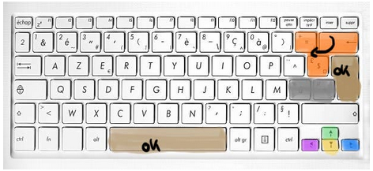

<div class="aide">
  <span class="titre">Aide</span>
  <div class="contenu">
    <div class="explication_aide">
      <span> Bienvenue sur la page d'aide!</span>
      <span>
        <span> Chaque couleur sur le clavier correspond à une action </span>
        <ul>
          <li>violet : se diriger vers la gauche</li>
          <li>vert : se diriger vers le haut</li>
          <li>jaune : se dériger vers le bas</li>
          <li>marron : valider votre selection</li>
          <li>orange : retour à la page d'avant</li>
          <li>gris: dirige vers la page d'aide (celle-ci)</li>
        </ul>
      </span>
      <span>Pour toutes autres question demandez à vos encadrants.</span>
      <span>Profitez de notre site!</span>
    </div>
    <div class="droite">
      
      <input type="button" value="Retour"/>
    </div>
  </div>
</div>
